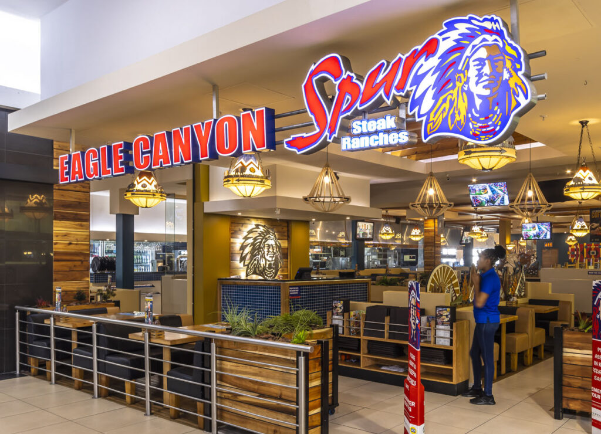
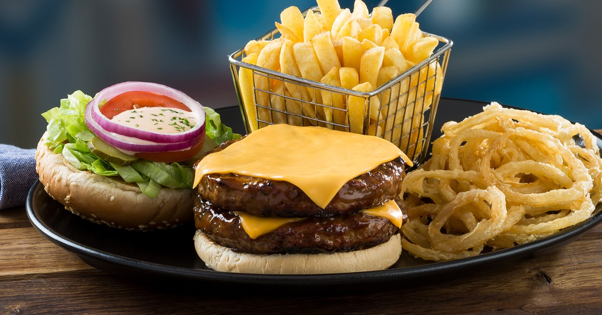
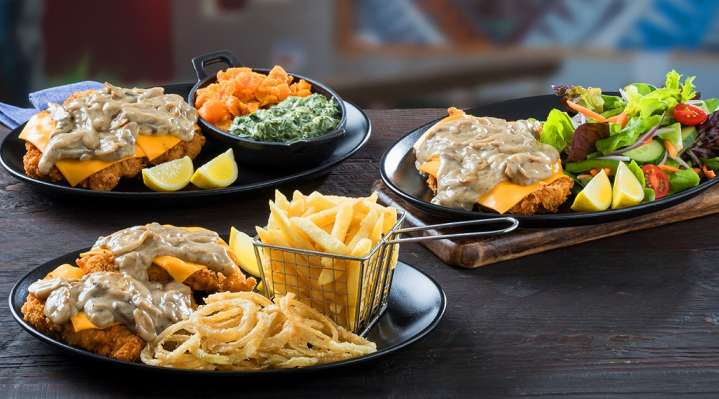

Spur Corporation Limited is a South African restaurant company. It operates a number of franchise chains, among them Casa Bella, Panarotti's‚ RocoMamas, The Hussar Grill, John Dory's and Spur Steak Ranches.
The company was founded by Allen Ambor (who is still the company's executive chairman) in 1967, when he opened the Golden Spur in Newlands, Cape Town.
In addition, Spur Corporation acquired a 60% interest in the Doppio Collection, which compromises of restaurant brands such as Doppio Zero, Piza é Vino and Modern Tailors.
WHERE TO FIND US
@Food Court
  